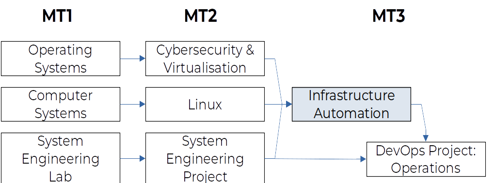

Studiewijzer
De inhoud van deze studiewijzer geldt zowel voor de reguliere studenten als de studenten afstandsleren (TILE). Waar nodig wordt duidelijk onderscheid gemaakt tussen zaken die enkel voor één van deze twee groepen gelden. Wat betreft praktische afspraken, regelingen, verwachtingen, enz. in verband met deze cursus zijn de enige geldige bronnen van informatie:
- De studiefichefiche van dit opleidingsonderdeel, te bekijken via de Chamilo- cursus of https://hogent.be/studiefiches/;
- Deze studiewijzer;
- Documenten op Chamilo;
- Aankondigingen op Chamilo—deze worden ook telkens per e-mail naar de betrokken studenten gestuurd;
- Het Onderwijs- en Examenreglement (OER), incl. departementale aanvullingen (DOER).
Jullie zijn zelf verantwoordelijk voor het opvolgen en lezen van alle aankondigingen. Studenten worden geacht hun opleidingsgerelateerde e-mails regelmatig op te volgen.
Indien er ergens twijfel over bestaat, of er is iets niet duidelijk, neem dan zo snel mogelijk contact op met je lector. De aangewezen manieren worden opgesomd in Sectie studiebegeleiding en planning.
De ervaring leert dat de onderlinge communicatie tussen studenten via Discord of Facebook leidt tot verwarring, foute informatie en overbodige discussie. Gebruik dus a.u.b. de officiële kanalen zodat we tot een open en correcte communicatie rond deze cursus kunnen komen.
Doel en plaats van de cursus in het curriculum
Deze cursus biedt een inleiding in het vakgebied Infrastructure Automation, d.w.z. het geautomatiseerd opzetten en in productie brengen van reproduceerbare en schaalbare netwerkdiensten.
Klassiek werden (en worden) servers stap voor stap handmatig geïnstalleerd en geconfigureerd. Hopelijk houdt de systeembeheerder daarbij een gedetailleerde procedurehandleiding bij zodat dit werk kan gereproduceerd worden, bijvoorbeeld als de servercapaciteit moet uitgebreid worden, als er moet gemigreerd worden naar een nieuwere versie van het besturingssysteem, enz. Wanneer je als systeembeheerder een serverpark van tientallen, honderden of zelfs duizenden machines (hetzij fysiek, hetzij virtueel) moet beheren, dan is het manueel opzetten, of zelfs scripten van de configuratie niet meer voldoende. In dit soort omgevingen wordt steevast gebruik gemaakt van Configuration Management Systems om de taaklast beheersbaar te houden.
In deze cursus maken we gebruik van het Configuration Management System Ansible, omdat dit een voor beginners toegankelijk systeem is dat qua filosofie en logica aansluit bij klassieke shell scripts. In het werkveld is de kans groot dat je ook met andere Configuration Management Systems in aanraking komt, bijvoorbeeld Puppet of Chef.
Andere termen die gebruikt worden in plaats van Infrastructure Automation:
- Infrastructure as Code: de sleutel tot automatiseren bestaat er in om de gewenste toestand van een systeem precies te beschrijven in een daarvoor ontworpen taal. Puppet heeft hiervoor bijvoorbeeld een Domain Specific Language (DSL) ontwikkeld, terwijl Ansible gebruik maakt van een bestaande taal voor het beschrijven van gestructureerde data, nl. YAML. Deze beschrijving is uitvoerbaar (executable), d.w.z. een configuration management system kan aan de hand van deze beschrijving een systeem naar de gewenste toestand brengen. Je kan dit beschouwen als (bron)code, maar in plaats van software bouw je er infrastructuur mee. Dit brengt als bijkomend voordeel met zich mee dat allerlei best-practices uit software-ontwikkeling op die manier ook kunnen toegepast worden in systeembeheer: code bijhouden in een versiebeheersysteem, codeerstijl toepassen, geautomatiseerd testen, geautomatiseerd uitrollen van infrastructuur (CI/CD), enz.
- GitOps: tegenwoordig hou je broncode zo goed als altijd bij in een versiebeheersysteem. Git is in dit domein marktleider geworden. Daarom wordt het bijhouden van infrastructuur-code in Git soms ook GitOps genoemd.
- De term Infrastructure Automation wordt vaak verward met DevOps. DevOps is de naam van de professionele beweging (ontstaan in 2009 in Gent) die software-ontwikkelaars (DEVelopers) en systeembeheerders (OPerationS) nauwer wil laten samenwerken met als doel kwalitatievere software. In een klassieke IT-organisatiestructuur zijn software-ontwikkeling en infrastructuur (= systeem- en netwerkbeheer) aparte afdelingen met hun eigen hiërarchie, manier van budgetteren, operationele doelstellingen, enz. Dat leidt tot allerlei kwaliteitsproblemen. Door de bedrijfsstructuur te organiseren rond interdisciplinaire product-teams, komt men tot een betere samenwerking, gedeelde verantwoordelijkheid en gemeenschappelijke doelstellingen. DevOps is dus een term die eerder te maken heeft met bedrijfscultuur en -organisatie dan met technische onderwerpen. Het is wel zo dat een verregaande automatisering typisch is voor DevOps-teams, en wellicht is de verwarring zo ontstaan.
Binnen het curriculum situeert deze cursus zich in het keuzepakket System and Network Administrator van het derde modeltraject. Qua inhoud gaat het verder op de olods Linux en System Engineering Project uit het 2e modeltraject.
De kennis en vaardigheden die je in Infrastructure Automation opdoet, kan je ook toepassen in DevOps project: Operations.

Leerdoelen en competenties
- Kan het opzetten van netwerkservices automatiseren met een configuration management system
- Kan reproduceerbare virtuele omgevingen installeren en configureren (Infrastructure as Code) met geschikte tools voor de automatisering van de gehele levenscyclus van een VM (bv. Packer, Vagrant, Terraform, Docker Compose, ...)
- Kan orchestratiesysteem voor containervirtualisatie configureren en beheren (bv. Kubernetes)
- Kan de werking van een it-systeem opvolgen met een logging- of monitoringsysteem om defecten te detecteren en de oorzaak op te sporen
- Kan een package-managementsysteem of repository opzetten en onderhouden en daarbij de problematiek van afhankelijkheden (dependencies) onder controle houden
Leerinhoud
Opmerking In academiejaar 2021-2022 hebben studenten die dit olod volgen het olod Linux, dat als begincompetentie geldt, nog niet gekregen. Dit academiejaar wordt dan ook een overgangsjaar waar de belangrijkste onderwerpen die in Linux gegeven zullen worden toch in dit vak aan bod zullen komen.
- Inleiding, opzetten werkomgeving
- Module 1: containervirtualisatie
- Docker sandbox-omgeving opzetten
- Module 2: continuous integration/delivery
- Een CI/CD pipeline opzetten met Jenkins
- Package management
- Module 3: bottom-up troubleshooting (overgangsjaar)
- Op een systematische en grondige manier configuratiefouten opsporen en oplossen
- Module 4: configuration management
- LAMP-stack geautomatiseerd opzetten met Ansible
- Minimaal functioneel netwerk opzetten: router, DNS, DHCP (overgangsjaar)
Leermateriaal
Het leermateriaal voor deze cursus bestaat uit:
- De informatie op Chamilo
- Online cursusmateriaal:
- Handleidingen van de gebruikte software (online te raadplegen):
- Ansible: https://docs.ansible.com/
- cAdvisor: https://github.com/google/cadvisor
- Docker: https://docs.docker.com/
- ElasticSearch, Kibana: https://www.elastic.co/guide/index.html
- Fluentd: https://docs.fluentd.org/
- Grafana: https://grafana.com/docs/
- Prometheus: https://prometheus.io/docs/
- enz.
Aanbevolen boeken
Er is geen verplicht handboek, maar verderop geven we wel enkele aanbevolen titels op voor de geïnteresseerde student. De cursus kan perfect gevolgd worden zonder toegang te hebben tot deze boeken, maar kunnen wel interessant zijn om de achtergrondkennis en inzichten in de leerstof te verhogen, of als naslagwerk wanneer je deze tools voor je job nodig hebt.
- Geerling, J. (2020) Ansible for DevOps: Server and configuration management for humans. LeanPub. https://leanpub.com/ansible-for-devops
- McKendrick, R. & Gallagher, S (2020) Mastering Docker. 4th Edition. Packt Publishing. https://www.packtpub.com/product/mastering-docker-fourth-edition/9781839216572
- Sesto, V. (2021) Practical Ansible: Configuration Management from Start to Finish. Apress. https://link.springer.com/book/10.1007%2F978-1-4842-6485-0
Opmerking: In deze lijst staat een boek met een verwijzing naar Springer Link. Deze kan je dankzij een abonnement van de HOGENT-bib gratis downloaden als PDF of Epub. Het volstaat om de link aan te klikken vanop de hogeschoolcampus of na het aanzetten van VPN. Er is verder geen authenticatie nodig, je kan het e-boek meteen downloaden.
Software
We gebruiken een heleboel softwarepakketten in dit olod, maar die hoef je niet noodzakelijk allemaal meteen te installeren. Het grootste deel van de installaties gebeurt immers binnen een (reproduceerbare) virtuele machine.
Volgende software heb je wel nodig:
- Een goede teksteditor. Visual Studio Code is aanbevolen, bij voorkeur met volgende plugins:
- GitLens - Git supercharged (Eric Amodio)
- Markdown All in One (Yu Zhang)
- markdownlint (David Anson)
- Remote - Containers (Microsoft)
- Remote - SSH (Microsoft)
- Remote - SSH: Editing configuration Files (Microsoft)
- ShellCheck (Timon Wong)
- VirtualBox, de laatste versie bij aanvang van het semester (incl. het Extension Pack)
- Vagrant, een command-line tool voor het geautomatiseerd opzetten van reproduceerbare virtuele omgevingen in VirtualBox (of een andere hypervisor.
- Git client (incl. Git Bash onder Windows)
- Linux- en Mac-gebruikers installeren ook Ansible. Dit is niet ondersteund op Windows, maar daarvoor is er een workaround voorzien.
De eenvoudigste manier om de nodige software te installeren is via een package manager. Bijvoorbeeld Chocolatey voor Windows (in een Administrator-terminal):
PS> choco install git
PS> choco install vscode
PS> choco install virtualbox
PS> choco install vagrant
of Homebrew voor Mac:
$ brew install bash
$ brew install git
$ brew cask install visual-studio-code
$ brew cask install virtualbox
$ brew cask install virtualbox-extension-pack
$ brew cask install vagrant
$ brew install ansible
Linux-gebruikers zijn deze manier van werken gewend en gebruiken de package manager van hun distributie, bv. apt (Debian, Ubuntu), dnf (Fedora en RHEL-familie), pacman (Arch Linux), enz.
Werkvormen
In dit opleidingsonderdeel wordt hoofdzakelijk gewerkt aan de hand van labo-opdrachten. De ondersteunende studiematerialen en deze syllabus moeten je in staat stellen die met succes af te werken.
Reguliere studenten
Tijdens de reguliere lessen geeft de lector klassikaal instructie, waarna studenten zelfstandig en op eigen tempo werken aan de labo-opdrachten. Studenten hebben op regelmatige basis een voortgangsgesprek met de lector en kunnen dan uitleg vragen bij specifieke problemen.
Als de contactmomenten omwille van corona-maatregelen niet op de campus kunnen doorgaan, dan gebeuren zowel de klassikale instructie als individuele opvogingsgesprekken via Microsoft Teams (videoconferencing).
De lector zal elke wijziging in deze regeling via Chamilo aankondigen, maar je mag in principe uitgaan van volgende regeling:
- Code groen: contactmomenten gaan door op de campus
- Code geel/oranje/rood: contactmomenten gaan door via Teams
Afstandsleren (TILE)
Studenten afstandsleren verwerken de leerstof op eigen tempo, aan de hand van de aangeboden studiematerialen, en voeren de labo-opdrachten uit.
Ze kunnen op de contactmomenten voor studenten afstandsleren een afspraak maken met de lector voor een individueel voortgangsgesprek en opvolging (zie Studiebegeleiding en planning).
Werk- en leeraanwijzingen
Het werken met labo-opdrachten vergt een zekere mate van zelfstandigheid van jou als student, maar dat is precies ook een attitude die verwacht wordt van een systeembeheerder. Je neemt dus zelf initiatief om de nodige kennis te vergaren en zoekt naar oplossingen voor de problemen die je ongetwijfeld zal tegenkomen.
Help elkaar daarin: samenwerken en kennis delen wordt van harte aangemoedigd. De lector is uiteraard beschikbaar om je bij te staan als je vast komt te zitten en kan je tips geven of verwijzen naar geschikte aanvullende studiematerialen.
Reguliere studenten moeten in de loop van het semester minstens drie keer persoonlijk bij de lector langs komen om deelresultaten te tonen. Kom zeker langs als je ergens vast zit, zodat de lector je terug op weg kan helpen!
Studiebegeleiding en planning
Studiebegeleiding reguliere studenten
Studenten stellen hun vragen over de cursus bij voorkeur tijdens de voorziene contactmomenten. Buiten de contactmomenten kunnen studenten vragen stellen via Teams, meer bepaald het chat-kanaal van het Team voor dit vak. Op Chamilo vind je een link naar het juiste kanaal. Studenten worden aangemoedigd om daar ook vragen van anderen te beantwoorden.
De lector rechtstreeks contacteren via e-mail of Teams chat doe je enkel als je een persoonlijke vraag hebt. Alle vragen over de leerstof gaan via het Teams-kanaal, zoals hierboven beschreven, zodat we jullie vragen hoogstens één keer moeten beantwoorden en iedereen meteen het antwoord kan zien.
Studiebegeleiding Afstandsleren (TILE)
Studenten afstandsleren kunnen vragen stellen tijdens de contactmomenten voor TILE. Als deze contactmomenten niet op de campus doorgaan, gebeurt dit via Teams (videoconferencing). De precieze regeling wordt vooraf via Chamilo aangekondigd.
Buiten de contactmomenten kunnen studenten vragen stellen via Teams, meer bepaald het chat-kanaal van het Team voor dit vak. Op Chamilo vind je een link naar het juiste kanaal. Studenten worden aangemoedigd om daar ook vragen van anderen te beantwoorden.
De lector rechtstreeks contacteren via Teams chat of e-mail doe je enkel als je een persoonlijke vraag hebt. Alle vragen over de leerstof gaan via het Teams-kanaal, zoals hierboven beschreven, zodat we jullie vragen hoogstens één keer moeten beantwoorden en iedereen meteen het antwoord kan zien.
Studiebegeleiding 2e examenkans
Studenten die doorverwezen worden naar de 2e examenkans, worden in principe niet begeleid en voeren de labo-opdrachten uit op eigen kracht. De lector zal je tijdens de feedback meedelen of en hoe je eventueel contact kan opnemen tijdens het zomerreces.
Weekplanning
Volgende weekplanning is enkel bij benadering! Wanneer er lessen wegvallen, bijvoorbeeld door verlofdagen, kunnen er nog verschuivingen gebeuren.
- In de weken waar een specifiek onderwerp opgegeven staat, is er klassikale instructie voorzien over dat onderwerp.
- Tijdens de weken waar niets staat, is er ruimte voor het werken aan de labo-opdrachten en individuele opvolging
- Er zijn twee gequoteerde troubleshooting-labo's gepland met (voor reguliere studenten) verplichte aanwezigheid.
- Bij ziekte volg je de normale procedure voor het wettigen van je afwezigheid. Contacteer ook zo snel mogelijk je lector voor een inhaalopdracht.
- Bij het begin van een troubleshooting-opdracht krijg je een opstelling voorgeschoteld (typisch een virtuele machine) met configuratiefouten. Het is jouw taak die zo snel mogelijk systematisch op te sporen en op te lossen volgens de methode die je aangeleerd krijgt. Over dit proces en je resultaten schrijf je een laboverslag dat je indient op Chamilo.
- Studenten afstandsleren kunnen de troubleshooting-labo's thuis uitvoeren. Spreek met de lector in de loop van de voorziene weken een moment af waarop je tijd hebt om hier aan te werken. Op het afgesproken tijdstip krijg je een downloadlink naar de opgave en dien je vóór de afgesproken deadline (in principe 4 uur na ontvangst van de opgave) je verslag in op Chamilo.
| Lesweek | Onderwerp |
|---|---|
| 1 | Inleiding, praktische afspraken |
| Installatie software | |
| M1. Containervirtualisatie | |
| 2 | |
| 3 | M2. Continuous Integration/Delivery |
| 4 | M3. Bottom-up Troubleshooting |
| 5 | Troubleshooting-labo 1 |
| 6 | |
| 7 | M4. Configuration Management |
| 8 | |
| 9 | |
| 10 | |
| 11 | |
| 12 | Troubleshooting-labo 2 |
| 13 | Inhaalsessie (indien ingericht door je lector) |
Evaluatie
De evaluatie van dit opleidingsonderdeel gebeurt volledig via permanente evaluatie. Meer bepaald word je beoordeeld op de manier waarop je de opgegeven labo-opdrachten hebt uitgevoerd.
Troubleshooting wordt geëvalueerd op basis van vaardigheidstests, de andere taken op basis van een portfolio dat je samenstelt tijdens de loop van het semester en dat je op een evaluatiemoment tijdens de examenperiode komt verdedigen. Dat portfolio bestaat concreet uit volgende elementen:
- De broncode, door elke student bijgehouden in een toegewezen Git repository
- Gedetailleerde labo-verslagen, eveneens bijgehouden in Git of desgevallend ingediend via Chamilo
- Demonstratie van deelresultaten aan de lector tijdens het semester
- Demonstratie van het eindresultaat aan de lector tijdens de examenperiode
De toekenning van het examencijfer gebeurt op basis van “rubrics” die beschreven worden in de evaluatiekaart die gepubliceerd wordt op Chamilo.
In een tabel worden een aantal criteria opgesomd, waar je aan moet voldoen. Je kan “voldoen” op verschillende niveaus, meer bepaald “bekwaam”, “gevorderd”, “deskundig”, of in het slechtste geval “nog niet bekwaam”. In de evaluatiekaart wordt beschreven wat je precies moet doen om elk niveau te behalen.
Om te slagen voor dit vak moet je aantonen dat je voor alle technische criteria minstens “bekwaam” bent. Met andere woorden, zelfs als je voor slechts één criterium “nog niet bekwaam” bevonden wordt, kan je niet slagen, hoe goed je ook de andere modules hebt afgewerkt. De niet-technische criteria (bv. rapportering) kunnen het examencijfer afhankelijk van het behaalde niveau nog positief of negatief beïnvloeden (en eventueel zelfs nog onder 10/20 doen zakken!).
Merk op dat je zowel een werkend product moet opleveren (= broncode) als de verslagen indienen én demo’s geven. Als één van de deliverables ontbreekt, wordt de opdracht beschouwd als niet gerealiseerd.
Tussentijdse deadlines
Studenten moeten minstens drie keer tijdens het semester deelresulaten opleveren en persoonlijk demonstreren aan de lector. Deze periodes worden beschouwd als tussentijdse deadlines, waarbij de afspraken gelden die in het Onderwijs- en Examenreglement (OER) en de Departementale Aanvullingen daarop (DOER) gespecifieerd zijn. Niet tijdig deelresultaten opleveren wordt dus beschouwd als het niet respecteren van tussentijdse deadlines en wordt als dusdanig gesanctioneerd. Een student krijgt dan voor de labo-opdrachten die niet tijdig opgeleverd werden de beoordeling “Nog niet bekwaam” en kan bijgevolg ook niet slagen.
Specifieke afspraken reguliere studenten
Reguliere studenten gaan tijdens de contactmomenten regelmatig langs bij de lector voor individuele opvolging en voor het opleveren van deelresultaten.
Ook als je weinig tot niets gerealiseerd hebt, kom je langs. Dat is immers een teken dat je ergens vast zit, en de lector kan je dan opnieuw op weg helpen.
Specifieke afspraken afstandsleren
Studenten afstandsleren kunnen op verschillende manieren deelresultaten opleveren:
- aan de hand van een screencast (bv. publiceren via Youtube of Panopto, link doorsturen naar de lector),
- via videoconferencing (Microsoft Teams, na afspraak),
- tijdens de contactmomenten voor TILE-studenten, als de lector daar aanwezig is (en enkel na afspraak)
Tweede examenkans
Wie niet slaagt, krijgt een tweede examenkans in de vorm van een individuele opdracht. De precieze opdracht hangt af van je evaluatie en bestaat concreet uit:
- één labo-opdracht die voor iedereen hetzelfde is (onderwerp: Kubernetes)
- labo's afwerken van de modules waar je je bekwaamheid nog niet hebt aangetoond.
Deze individuele opdracht wordt meteen vastgelegd en besproken op het finale evaluatiemoment. Als je nog geen individuele opdracht gekregen hebt op het evaluatiemoment (bijvoorbeeld omdat je afwezig was), dan kom je naar de feedback.
Studenten afstandsleren kunnen dit ook per e-mail regelen of een afspraak maken om dit te bespreken via Teams, mits dit gebeurt vóór aanvang van het intersemestrieel reces.
Wie na afloop van de feedback nog geen afspraak gemaakt heeft voor een individuele opdracht, geeft daarmee te kennen niet te willen deelnemen aan de 2e examenkans.
Licentie-informatie
Deze syllabus is samengesteld door Bert Van Vreckem. De tekst van de syllabus en de slides vallen onder de Creative Commons Naamsvermelding-GelijkDelen 4.0 Internationale Publieke Licentie.